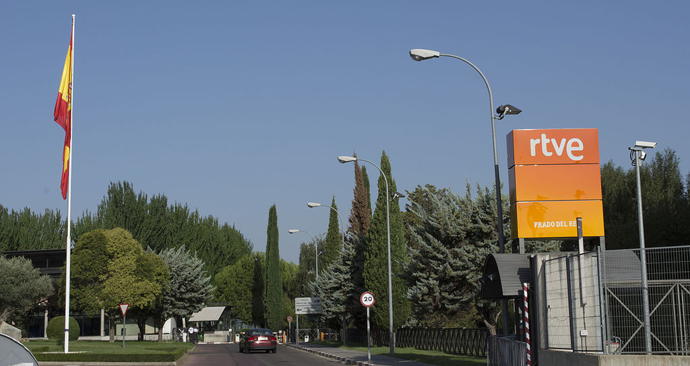
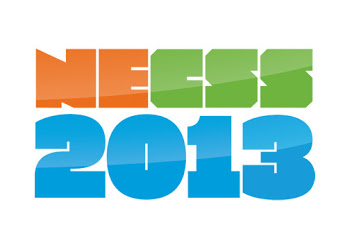
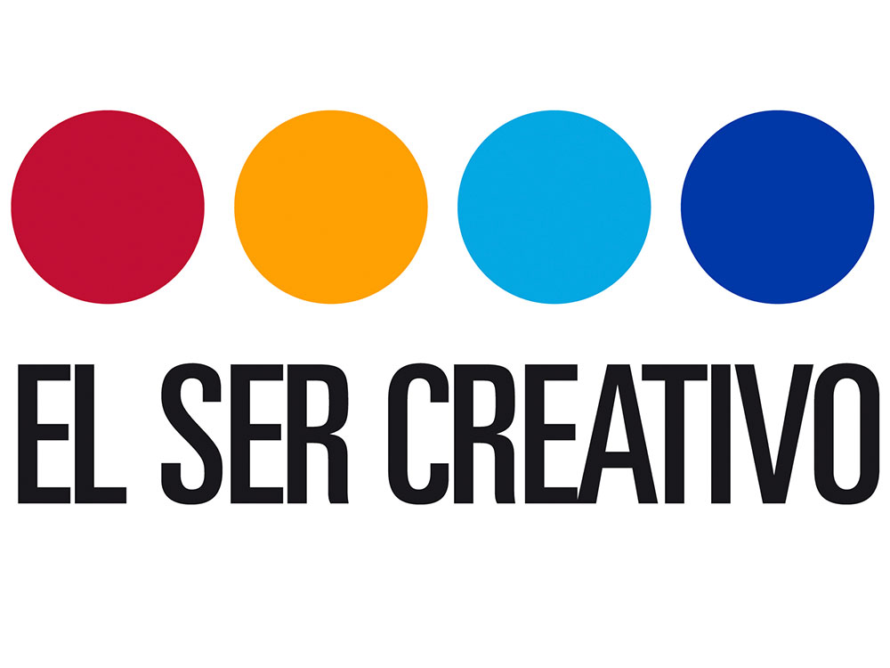
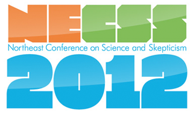
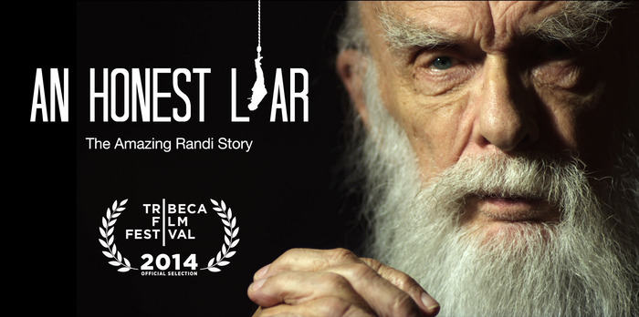
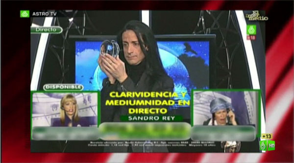
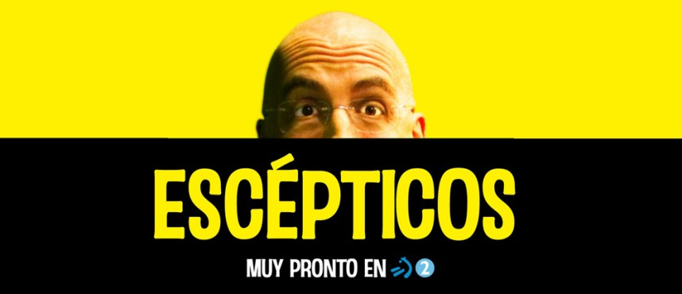

Tag: skepticism
As you probably know, we are celebrating the XXX Anniversary of ARP-SAPC with a special event this next Saturday (Sep 30th) with Alfonso López Borgoñoz (@lopezborgonoz). As an addition to this celebration, a week later we'll be honoured to host a Skeptics in the Pub Madrid special event with Susan Gerbic.
Cerramos la temporada con un evento potente: vendrá el divulgador José Manuel López Nicolás y nos hablará sobre los trucos de la industria cosmética. Creemos que el tema es muy interesante y estamos seguros de que os gustará. El ponente ya ha pasado por nuestro Pub y no hemos podido resistirnos a traerle de vuelta.
Se cumplen 40 años de la publicación de un manifiesto contra la astrología (Objections to Astrology), que firmaron cerca de 200 científicos de todo el mundo (incluyendo 18 premios Nobel) con Bart J. Bok, Lawrence E. Jerome y Paul Kurtz a la cabeza, y 25 años de la versión española, respaldada por más de 250. Esa versión española la impulsaron los astrofísicos Miguel Ángel Sabadell (@cienciadetuvida) y Javier Armentia (@javierarmentia), y el 9 de mayo tendremos a ambos en nuestro EeeP. Recordarán el manifiesto, las circunstancias en que se publicó y nos hablarán de si la sociedad actual sigue aceptando la astrología como si fuera algo serio, incluso científico, o si ha cambiado algo en este tiempo.
El evento de Abril se ha tenido que desplazar a fin de mes para evitar el periodo vacacional, pero ya está a la vuelta de la esquina. El próximo evento de Escépticos en el Pub Madrid será el Sábado 25 de Abril de 2015 con la participación de Lucas Sánchez que vuelve de nuevo a visitarnos para hablar sobre un asunto de bastante actualidad: virus y conspiranoia.
Tengo el gusto de anunciar que el próximo evento de Escépticos en el Pub Madrid será el Sábado 14 de Marzo de 2015 con la participación de Mauricio-José Schwarz que dará una prometedora charla titulada ¡Vamos a morir todos! El New Age y el negocio del miedo. Será la primera vez que tengamos a Mauricio en EeeP Madrid aunque ya ha pasado por otros eventos del mismo formato organizados por ARP-SAPC en otras ciudades como Barcelona o Santiago de Compostela.
Mediante la difusión de este manifiesto me adhiero a la iniciativa #NoSinEvidencia
Bastaría decir que The Demon-Haunted World (El Mundo y sus Demonios en castellano) pasa por ser una de las obras de divulgación más influyentes de uno de los autores más influyentes. Carl Sagan publicó esta obra con más de 60 años (falleció un año más tarde, en 1996), tras una vida dedicada a divulgar e investigar al más alto nivel. Parece que quiso despedirse con un gran compendio de ejemplos, herramientas y consejos, condensados para mostrar las bases del método científico y los fundamentos del pensamiento crítico.
Este próximo sábado vuelve Escépticos en el Pub Madrid y en esta ocasión repetimos ponente. Tras arrancar la temporada hace una semana con Eparquio Delgado (@eparquiodelgado), esta vez contamos con otro psicólogo totalmente diferente: Vuelve Ramón Nogueras, que ya dejó buen sabor de boca entre el público en Junio de 2011, su primera aparición en EeeP.
El comienzo de la nueva temporada de Escépticos en el Pub Madrid estaba en principio previsto para Octubre, pero finalmente hemos sumado una charla más y con ello el curso 2013-2014 empezará este próximo Domingo 22 de Septiembre. No hemos querido desaprovechar la oportunidad de contar en Madrid con Eparquio Delgado (@eparquiodelgado) por un doble motivo. Primero porque en ARP-SAPC le debemos un premio y segundo porque queremos que nos hable sobre un tema que merece toda nuestra atención.
Para cerrar el curso a lo grande tendremos a Jesús López Amigo. Jesús es un Arquitecto Técnico valenciano, racionalista, socio de ARP-SAPC y miembro de varias logias masónicas. Participa desde hace años en foros sobre mitos y conspiraciones (entre ellos el foro de conspiraciones de la JREF). No cabe duda, la persona idónea para hablarnos de un tema estrella en el escepticismo: ¡Conspiraciones!
El Sábado 11 de Mayo tendremos una nueva edición de Escépticos en el Pub Madrid y el título deja claro el contenido: Médicos, curas, homeópatas y brujas: a la conquista del efecto placebo
En esta ocasión el ponente será Ignacio García Ribas, Licenciado en Medicina por la Universidad Autónoma de Madrid y desde su época de estudiante especializado en Oncología. Hizo su tesis doctoral en el Imperial Cancer Research Fund en Londres investigando sobre terapia génica para el cáncer. Desde entonces trabaja en en investigación clínica desarrollando nuevos fármacos para el tratamiento del cáncer.

Entrada de los estudios de Radio Televisión Española en Prado del Rey.
Source: Daniel Sánchez Badorrey @
Wikimedia Commons -
CC BY-SA
Encuentro en mi buzón la respuesta de la Defensora del Espectador de RTVE a mi queja por la masiva programación religiosa impropia en un medio público de un Estado aconfesional. La petición iba en la misma línea que la queja realizada por Europa Laica y el Observatorio del Laicismo.
El próximo Sábado 6 de Abril tendremos una nueva edición de Escépticos en el Pub Madrid con un tema muy apropiado para estas fechas. Además de una gran charla, finalmente hemos encontrado la ocasión perfecta para usar como cartel el magnífico trabajo de restauración de Cecilia Giménez.
El ponente será Miguel Ángel Sabadell, Licenciado en Astrofísica por la Universidad Complutense de Madrid y Doctor en Física Teórica en la Universidad de Zaragoza. Es editor de Ciencia en la revista Muy Interesante y autor del blog La Ciencia de tu Vida (@cienciadetuvida).
El próximo Sábado 2 de Febrero vuelve Escépticos en el Pub Madrid tras el parón navideño tras la gira por España de Sanal Edamaruku. Para la vuelta hemos escogido un tema que siempre suscita mucho interés: las vacunas.
La Doctora en Ciencias Químicas Margarita del Val Latorre, Investigadora del Centro de Biología Molecular Severo Ochoa (CSIC-UAM) y asesora de la Agencia Europea de Medicamentos, nos presentará su charla ¿Vacunas? ¡Póntela, pónsela!

En Diciembre se abrió el registro para la edición 2013 de la Northeast Conference on Science & Skepticism (@NECSS), que este año se llevará a cabo del 5 al 7 de Abril en la magnífica ciudad de Nueva York. No quería dejar pasar la oportunidad de recordarlo, no quedarán muchas entradas disponibles pero siguen quedando.
Sanal Edamaruku (@SanalEdamaruku) es presidente y fundador de Rationalist International agrupación a la que pertenecen (o pertenecían hasta su fallecimiento) figuras de la talla de Christopher Hitchens, Paul Kurtz, Richard Dawkins, Richard Stallman (yeah!), James Randi o Richard Wiseman entre otros. Ha trabajado durante décadas en la India promocionando la ciencia y luchando contra la superstición.
Saltó definitivamente al panorama internacional en 2008, cuando retó a un chamán que aseguraba poder matar en tres minutos a base de recitar mantras, a que le matase en directo en televisión bajo condiciones supervisadas a prueba de fraude. El vídeo de aquello merece ser visto.
Hoy, 24 de noviembre, muchas personas en todo el mundo celebramos el "Día del Orgullo Primate" para reivindicar nuestro origen evolutivo y por tanto nuestro parentesco con el resto de especies del mundo animal.
El Día del Orgullo Primate se celebra cada 24 de Noviembre porque en esta fecha sucedieron dos hechos relevantes muy relacionados. En 1859 Charles Darwin publicó El Origen de las Especies, y en 1974 se descubrió el fósil de Lucy, el más completo de un Australopithecus afarensis.

El Ser Creativo, III Congreso de Mentes Brillantes
Ya hablé el año pasado sobre el formato del evento, pero repasaré las características que definen al evento: En dos días escucharemos a 21 ponentes exponer sus ideas, y cada ponente hablará durante 21 minutos. Esta insistencia con el 21 es porque afirman que es el tiempo que el cerebro humano mantiene su atención al 100% (citation needed).
Tras mi experiencia del año pasado, debo advertir que lo mejor no viene durante los monólogos que se marca cada uno, sino en el debate posterior que se forma tras cada bloque temático de 3-4 charlas.
Los próximos 6 y 7 de Noviembre asistiré aquí en Madrid, por cortesía de su organizador Joaquín Zulategui, al III Congreso El Ser Creativo. Ya hablé de este singular evento en el blog el año pasado, y si otros líos no lo impiden espero poder hablar aquí también del evento de este año.
Entre otros interesantes ponentes, en El Ser Creativo podremos escuchar al magnífico Michael Shermer, que ya participó en 2011 en el evento hermano de El Ser Creativo en Puebla, México: la Ciudad de las Ideas. No podíamos desperdiciar su paso por aquí, y nos sentimos orgullosos de poder contar con él para una Edición Especial de Escépticos en el Pub Madrid.
El creador de mi admirada serie de clips en homenaje a Carl Sagan, Reid Gower, partició en 2011 en un evento TEDx en Vancouver. La charla es breve pero más que correcta, y me sirve de excusa para compartir el último episodio, del que aún no había dado cuenta en el blog.
El noveno capítulo, The Humans, abunda en un tema habitual, el impacto del ser humano en el planeta. Tras miles de años con vida sobre la superficie, en estos últimos decenios la huella del hombre llega a todos los rincones del planeta, Y los exploradores carecen de los recursos necesarios para nuevos desafíos.
Tras un tremendo mes de Mayo con tres ponentes estelares: José Manuel López Nicolás (@ScientiaJMLN), James Randi (@JREF) y D.J. Grothe (@DJGrothe), en Junio cerramos la temporada con otra charla de gran nivel y expectación.
La persona elegida para el cierre es Patricia Fernández de Lis (@pflis), periodista especializada en Ciencia y Tecnología, fue Redactora Jefe de la magnífica sección de Ciencias del Diario Público desde su fundación hasta su defunción (labor por la que recibió el premio Mario Bohoslavsky que concede ARP-SAPC por la contribución de Público a la lucha contra las pseudociencias) y actualmente es Directora de la web de noticias de Ciencia y Tecnología Materia, que acaba de echar a rodar.
Hace unos días se publicaron en la web de Radio Podcastellano los audios de las charlas de SkeptiCamp Alicante 2012. Gracias a ellos podéis disfrutar de nuevo (o por primera vez) de todas las charlas.
Lamentablemente no han encontrado chicha suficiente ni en la Bienvenida ni en la Clausura para un episodio propio, pero pueden escucharme en casi cualquiera de los cortes ejerciendo mis labores de humilde presentador y moderador.
Quedan unas horas para SkeptiCamp Alicante 2012, el evento abierto de divulgación que celebraremos este Sábado 5 de Mayo durante Street Alicante Science.
Aunque habitualmente el horario se debe anunciar la misma mañana del evento, dada la expectación generada paso a detallarles lo que tendremos el gusto de escuchar mañana:
Con tanto lío, tanto viaje y tanto trabajo para SkeptiCamp Alicante no había anunciado en el blog el Escépticos en el Pub de Mayo. Porque amigos, el evento del día 11 con James Randi y D.J. Grothe es un extra, es de regalo, la convocatoria oficial ordinaria del Mayo se mantiene para el primer sábado de mes y la charla merece tremendamente la pena.
En esta edición José Manuel López Nicolás (@ScientiaJMLN); Doctor en Ciencias Químicas, Profesor Titular de Bioquímica y Biología Molecular de la Universidad de Murcia y autor del popular blog Scientia; nos hablará de lo que él llama Marketing pseudocientífico.
En el penúltimo bloque de presentaciones tenemos dos charlas relacionadas con tecnología, para muy diferentes usos pero en cualquier caso aparatos impensables hace unos cuantos años. Darío nos explicará cómo medir y controlar absolutamente todo lo que pasa en nuestro cuerpo, Mario por su parte nos hablará de robótica y su utilidad en el mar.
Este será el último bloque de presentaciones, dos charlas impartidas por compañeros de Hablando de Ciencia (@hdciencia) sobre aspectos punteros de la biología actual. Por un lado Héctor Castro nos dará una prometedora charla de introducción a la neurología y José Francisco García nos explicará qué es la cronobiología, un tema sorprendente y seguro que muy interesante.
Tendremos dos charlas que nos harán mirar (¡y reflexionar!) al cielo de Alicante desde dos perspectivas muy distintas. Por un lado Antonio nos explicará, para aquellos que aún tengan dudas, de forma sencilla por qué los horóscopos son una chorrada. Nahum nos hablará sobre algunos aspectos de Marte que refuerzan el interés que todos tenemos sobre el planeta Rojo.
Entre las siglas que colecciono (como dicen algunos), dentro de las relacionadas con el pensamiento crítico además de pertenecer a ARP-SAPC (Sociedad para el Avance del Pensamiento Crítico) y Círculo Escéptico también soy socio de la JREF (James Randi Educational Foundation). Como socio de la JREF, y como no puedo estarme quieto, he insistido desde el principio en las actividades e intereses de la Fundación fuera de Estados Unidos y Reino Unido, dado el maravilloso esfuerzo que ya se hace en estos dos países. Por otro lado, ARP tuvo la amabilidad de ayudarme económicamente cuando supo de mis viajes a Manchester para la QED y a Nueva York para NECSS. En ellas he tenido ocasión de compartir lugar y conversación con gente bastante interesante, lamentablemente aún no he sacado tiempo para escribir las crónicas de ambos eventos pero lo haré y saldrán publicadas en la revista El Escéptico que edita ARP-SAPC.
La Policía Científica, que colabora en otras actividades de StAS, también ha querido sumarse a SkeptiCamp para compartir con nosotros esta parte tan interesante del trabajo policial, dedicación a veces desconocida a pesar de tantas series de televisión y películas al respecto.
Me complace enormemente presentar estas dos actividades, porque su contenido es perfecto para un evento de este tipo y porque conozco a ambos ponentes desde hace mucho tiempo, en concreto a Alicia literalmente de toda la vida (de toda su vida).
Ya tenemos propuestas de charlas suficientes para llenar más de una jornada, por tanto nos vemos obligados a cerrar el plazo de recepción de propuestas. Estamos haciendo malabarismos para no tener que dejar fuera a ningún participante de los que mandaron propuesta en plazo, aunque desde luego no hay sitio para más. A lo largo de esta semana terminaremos de confirmar todo, pero os adelanto que tiene una pinta excelente. Hay temas muy variados y todo es realmente interesante y prometedor.
Ya tenemos más de quince posibles charlas, que iremos confirmando cuando las propuestas estén totalmente pulidas, por tanto estamos en condiciones de anunciar la cuarta charla.

Programé esta entrada hace algo menos de una semana desde Madrid. En estos momentos estoy en un tren camino de Washington a Nueva York, probablemente leyendo o durmiendo, pero la magia de la informática me permite contaros qué tengo pensado hacer este próximo fin de semana. La excusa para este viaje de 10 días por los Estados Unidos es que tengo la intención de participar en la próxima NECSS 2012 (Northeast Conference on Science and Skepticism), que se celebra aquí en la Gran Manzana el 21 y 22 de Abril.
Hay varias charlas con flecos aún pendientes de concretar, pero ya podemos anunciar la tercera actividad confirmada.
Si has llegado aquí sin saber qué es un SkeptiCamp, primero te conviene leer la entrada de presentación e incluso te recomiendo darte un paseo por la wiki oficial. Un SkeptiCamp es una conferencia informal sin ánimo de lucro, organizada por la comunidad para aprender y compartir en un entorno abierto. Cualquiera, aficionados o expertos, puede participar o dar una charla y aprovechar la oportunidad para darse a conocer y conocer gente. Las claves del modelo son muy sencillas: En primer lugar, cualquiera con ganas de aprender y compartir puede organizar. En segundo lugar, la base de la organización está en la colaboración, repartiendo el esfuerzo entre varias personas. Y en tercer lugar se fomenta, aunque sin exigir, que cada participante pueda ofrecer al resto una charla interactiva sobre un tema científico o de temática escéptica.
Jesús Rosino, divulgador sobre el cambio climático, traductor del genial Skeptical Science y autor de un libro sobre cambio climático, nos hablará de su especialidad en una charla que llevará por título El cambio climático antropogénico: ciencia vs. pseudociencia.

James Randi, An Honest Liar
Hace un par de semanas me alegró el día saber que se está grabando y produciendo un documental sobre la vida del Asombroso James Randi. Este personaje, fundamental en el desarrollo y expansión del pensamiento crítico y la lucha contra las pseudociencias, merece todo tipo de homenajes, especialmente ahora que ya es bastante mayor aunque siga plenamente lúcido e hiperactivo.
QED (Question-Explore-Discover) es un maravilloso evento organizado por Greater Manchester Skeptics Society y Merseyside Skeptics Society. Siendo un congreso barato (sobretodo para lo que es habitual en UK) suele terminar con beneficios gracias a la generosidad de los participantes y asistentes. Al igual que el año pasado, que reunieron más de 5 mil libras, todos los beneficios irán a parar a dos organizaciones benéficas: la National Autistic Society (para ayuda a gente con autismo y Asperger) y Sense About Science (proporciona medios y argumentos científicos para temas que puedan estar en el debate público).
Hasta hace poco la divulgación en este país se hacia para unos pocos y habitualmente también se originaba en unos pocos. Gracias al imparable desarrollo de Internet y la sociedad de la información, esto afortunadamente también se ha democratizado y vemos como día a día sigue en un crecimiento imparable hasta ahora e inimaginable hace unos años.
Eugenio Manuel Fernández Aguilar (Ciencia en el XXI), que ya estuvo hablando de la conspiración lunar en la primera temporada de Escépticos en el Pub Madrid, nos hablará del fin del mundo, o siendo menos ambiciosos del fin de la humanidad. La charla lleva por título '10 formas de acabar con el mundo' y en boca del propio autor Se hará un breve recorrido por una selección de 10 formas de acabar con el mundo. No se trata de una charla sesuda y académica.
Para acompañarle tendremos a Sacha Marquina con su espectáculo Escepticantos, del que ya disfrutamos en pequeñas dosis en el Congreso Antes del Fin del Mundo de l'Alfàs del Pi.
Como algunos sin duda ya sabréis el pasado fin de semana se celebró SkeptiCamp Madrid 2012, por primera vez en un país de habla no inglesa, el primero por tanto en castellano y en España, cuya organización tuve el honor y el privilegio de coordinar y dirigir.
Por algún extraño motivo no he hablado hasta ahora de uno de los proyectos a los que más tiempo de ocio (ocio puro) he dedicado en los últimos meses: la promoción en castellano a nivel global del modelo SkeptiCamp (lo que llamamos ESkeptiCamp) y en concreto la organización de SkeptiCamp Madrid 2012, que se llevará a cabo este próximo Sábado 28 de Enero en Madrid. Vayamos por partes.
En cuestión de dos semanas vuelve Escépticos en el Pub Madrid, esta vez con un tema tremendamente interesante y apto para todo tipo de público interesado en la ciencia y la medicina, no exclusivamente escéptico. En parte por esta sensación (y deseo) hemos recuperado la sana costumbre de preparar el cartel del evento, servirá para darle una mejor difusión a la cita y nos permitirá captar lugareños curiosos.
Tras el parón navideño, menos invernal que otros años, vuelve Escépticos en el Pub Madrid con un tema perfecto para estos días de empachos, kilos de más y buenos propósitos: Las dietas milagro.
Álvaro Sánchez Jiménez, nutricionista Senior de Medicadiet, nos explicará por qué una dieta equilibrada es saludable y en qué se diferencia de las distintas dietas milagro. Tiene bastante experiencia en charlas de nutrición en empresas e incluso ha participado en varios programas de radio y televisión.
I've been constantly thinking about this post since I finished the book almost two months ago. In this time lapse Mr. Hitchens died, with the subsequent hard time for us his followers. Embarrassingly I didn't have the time and/or strength to write about it, I found it difficult to write something different than what many others wrote. Although it was not a surprise for anyone, his death truly made me very sad and angry.
Como ya os comenté hace unos días, este próximo sábado 26 de Noviembre tenemos nueva edición de Escépticos en el Pub Madrid. Hemos tenido que adelantar unos días la edición de Diciembre para cerrar (al menos por ahora) la colaboración con el Consejo Superior de Investigaciones Científicas (CSIC).
En Noviembre la edición madrileña de Escépticos en el Pub Madrid llega con doble sesión. El motivo es que vamos a formar parte de un proyecto europeo de divulgación científica llamado ComScience en el que por parte española participa el Consejo Superior de Investigaciones Científicas (CSIC). Este proyecto persigue la divulgación científica de ciertos temas a nivel local, orientada especialmente a público no habitual en ambientes académicos. La coincidencia de buena parte de esos objetivos con nuestro formato propició que hace unos meses se pusieran en contacto con nosotros y nos ofrecieran participar en este interesante proyecto.
No publiqué en su momento el séptimo episodio, lo hago ahora junto al octavo que acaba de salir del horno.
Esta próxima semana tendré el gusto, el honor y la responsabilidad de asistir al congreso El Ser Creativo, o Congreso de Mentes Brillantes como ellos mismos se llaman, que se celebrará en el Palacio de los Deportes de Madrid del 19 al 21 de Octubre
Como nota final del congreso Escépticos 2011 Antes del fin del mundo celebrado el pasado fin de semana en l'Alfàs del Pi (Alicante), se ha hecho pública una declaración en la web de ARP Sociedad para el Avance del Pensamiento Crítico a la que me sumo y doy difusión
Dentro de algo más de una semana vuelve Escépticos en el Pub a Madrid, en su tercera temporada en la capital. La pausa veraniega ha durado más de lo que nos habría gustado a algunos, entre otras cosas porque esta edición se traslada del primer sábado de mes al día 22 de Octubre para facilitar la presencia del ponente
En unas horas partiré hacia Alicante para uno de los eventos del año en España en cuanto a divulgación y escepticismo. El I Congreso Escéptico 2011 "Antes del fin del mundo" organizado por ARP Sociedad para el Avance del Pensamiento Crítico. Aparte del consabido networking (los corrillos de toda la vida), las principales charlas y actividades son las siguientes
Ya tenemos anuncio oficial para las jornadas que organiza ARP Sociedad para el Avance del Pensamiento Crítico (asociación a la que pertenezco) en próximas fechas. Se llevará a cabo los días 8 y 9 de Octubre de este mismo 2011 en la localidad alicantina de L'Alfàs del Pi
Con motivo del lanzamiento de la última lanzadera por parte de la NASA, The Sagan Series publica un nuevo y conmovedor vídeo
Estamos invadidos de información por todas partes. No todo es fiable, no todo se dice de buena fe, no todo está exento de oscuros intereses, no todo es ni siquiera sensato. Michael Shermer, fundador de la Skeptics Society y editor jefe de la Skeptic Magazine nos explica como sería su Kit de Detección de Camelos (Baloney Detection Kit), basado en diez preguntas que nos debemos hacer ante cada afirmación que escuchemos
Aprovecho este nuevo episodio de The Sagan Series para recordar que el pasado mes de Abril la organización SETI anunció que debido a problemas de financiación su conjunto de radiotelescopios se tendrán que poner en modo de hibernación
A short documentary about that most curious of creatures, the skeptic. Featuring Phil Plait and members of SSaSS, the Secular Students and Skeptics Society. Produced for a graduate class at the University of Colorado School of Journalism.
For those who didn't know Tim Farley, he is the creator and promoter of the splendid site What's the Harm and his very useful blog Skeptical Software Tools. Part of this huge activism was a recent initiative to measure the skeptical podcasting, so I've been requested to make a list of the known skeptical podcasts in Spanish. It'll be easy for me as I am a frequent listener (and often friend) of them. To help him, with each program I'll add a brief description, extracted if possible from the source.

Esta es la transcripción de un fragmento de vídeo visto este miércoles en El Intermedio (vídeo 2, minuto 20’30”). En ella, una mujer (presumiblemente anciana) llama al programa nocturno del vidente Sandro Rey de La Sexta, para preguntar por la salud de su nieta
Tras ver con envidia desde la lejanía este tipo de eventos, hoy anunciamos que arranca la organización del primer Skepticamp en castellano. Por ahora os dejo con la convocatoria, y os ruego que le deis la máxima difusión
Entre el final de la campaña y las acampadas hemos tenido el país congelado durante unos días. Volvemos a la normalidad (no sería correcto llamar anormalidad a la decisión democrática de los ciudadanos) y por tanto, como cada primer sábado de mes, llega una nueva edición de Escépticos en el Pub Madrid. Se trata de la última edición de la temporada antes del descanso veraniego
The Sagan Series es una serie no oficial de vídeos creados por Reid Gower que combinan narraciones de Carl Sagan con espectaculares imágenes y música
Ahora todo parece que gira en torno a Obama y especialmente Osama, hace poco era cierta boda la gran noticia, y de forma permanente siempre tenemos el fútbol, pero antes de todo esto todos nuestros pensamientos y preocupaciones estaban en Fukushima. Por ello, cuando se empezó hace unas semanas a pensar en el tema para Escépticos en el Pub Madrid de Mayo se buscó algo relacionado con el desastre nuclear de Japón
Acaba de ser publicada la tercera parte de The Sagan Series, esta vez titulada The Reassuring Fable (la fábula tranquilizadora). Ya comenté los dos primeros episodios hace un par de meses.
Acabo de terminar la lectura de Fermat's Last Theorem (El último teorema de Fermat en su edición española) del autor británico Simon L. Singh. A pesar de haber tardado bastante en acabarlo (diversos líos me han tenido alejado de cualquier libro) me ha parecido una lectura muy amena y totalmente recomendable
Hace unos meses les conté que durante la pasada TAM London 2010 asistimos al pre-estreno mundial del cortometraje de animación Storm the Animated Movie, basado en el genial poema musicalizado del fantástico Tim Minchin.
El ponente de Marzo será Andrés Carmona, mentalista y socio de ARP-SAPC, con una charla titulada Magos, mentalistas y paranormales. Una perspectiva crítica sobre la magia, el mentalismo y lo paranormal (con demostraciones incluidas)
The Sagan Series es una serie no oficial de vídeos creados por Reid Gower que combinan narraciones de Carl Sagan con espectaculares imágenes y música. Aclaro que no son vídeos oficiales de la NASA, y él mismo ante la confusión y las críticas recibidas tras el primer vídeo incluyó en los siguientes los logotipos de las demás agencias espaciales (con un tamaño proporcional a su presupuesto)
Como ya saben, y ya les he anunciado en repetidas ocasiones, mañana se celebra en todo el mundo la Campaña 10:23, una manifestación para concienciar acerca de los peligros y engaños de la homeopatía.
Ya tenemos convocatoria oficial para el arranque en su segundo año de Escépticos en el Pub en Madrid
El próximo día 5 de Febrero manifestantes en varias ciudades del mundo cometeremos de forma coordinada un placebocidio homeopático (del que ya hemos hablado aquí) para llamar la atención sobre el asunto y sensibilizar a la opinión pública de que la homeopatía no sólo no funciona sino que no es posible que funcione. De este modo, el objetivo más importante es animar tanto a consumidores como a médicos y farmacéuticos para que recurran a los medicamentos que realmente han demostrado efectos (positivos) en la salud de los pacientes.

Anuncio de la serie Escépticos en ETB
Source:
Magonia
Hace ya unas semanas que los señores José Antonio Pérez y Luis Alfonso Gámez nos anunciaron la preparación y estreno a primeros de 2011 del episodio piloto de Escépticos, una serie de divulgación para ETB, la televisión pública vasca. En función del éxito que coseche el piloto hay unos cuantos guiones para hacer una temporada completa de reportajes
Defensores de los derechos de los consumidores de todo el mundo están siendo convocados a participar en una sobredosis global de pastillas homeopáticas para concienciar a la opinión pública de la manifiesta ineficacia de estos remedios
Llega la última edición de Escépticos en el Pub Madrid del año. Será el próximo 11 de Diciembre a la hora habitual (19:30) en el lugar habitual (The Clover House, C/ Almansa, 85).
Hace unos días pude ver este vídeo por primera vez en el blog de PZ Myers y me dejó quince minutos con la boca abierta. Lo vi por segunda vez cuando Borja Robert hizo mención de él en su blog. He vuelto a dar con él gracias a Ismael Pérez en Homínidos y no he podido resistirme a verlo por tercera vez ahora que alguien (nicasso) se ha tomado la molestia de subtitularlo en castellano.
Este manifiesto ha sido redactado por La Ciencia y sus Demonios

TAM London 2010
Mañana, se puede decir que en cuestión de horas, salgo hacia Londres. Por tercera vez en menos de dos años aunque esta vez no es por motivos turísticos.
El motivo de este viaje es asistir a la TAM London 2010, un evento único y muy especial. TAM viene de ‘The Amaz!ng Meeting’, unas jornadas de eventos y conferencias organizadas por la JREF (James Randi Educational Foundation) habitualmente en Las Vegas aunque desde 2009 se vienen desdoblando aquí en Europa, en Londres hasta ahora.
Tras el parón veraniego, vuelve Escépticos en el Pub Madrid. La convocatoria que debería ser de Septiembre se pasa en realidad a Octubre, ya que se ha retrasado un fin de semana. A partir de ahora será el primer sábado de cada mes, en lugar de el último como hasta ahora.
En esta ocasión el ponente será Manuel Collado, investigador del Centro Nacional de Investigaciones Oncológicas (CNIO) y su tema, bastante sugerente, será el envejecimiento
Hace unos días terminé de leer El Cisne Negro, el impacto de lo altamente improbable, de Nassim Nicholas Taleb, uno de los libros más interesantes que he leído recientemente.
Ya tenemos la convocatoria oficial para el próximo Escépticos en el Pub Madrid, que se celebrará el Sábado 29 de Mayo de 2010
Hace unos días terminé The Blind Watchmaker (El relojero ciego en castellano) de Richard Dawkins, uno de los libros que me traje de Oxford, lugar del que Dawkins es ahora una de las figuras más representativas. Las librerías estaban copadas por todas o casi todas las obras de este etólogo, biólogo y divulgador científico, con especial interés hacia el Darwinismo, la evolución en general y el ateísmo.
Si eres de los que pelean con negacionistas del cambio climático, ya tienes una aplicación de iPhone (o iPod Touch) para ello: Skeptical Science desarrollada por Shine Technologies. Totalmente gratuita, y totalmente recomendable.


{kind=link}
{kind=link}
{kind=link}
{kind=link}
{kind=link}
{kind=link}
{kind=link}
{kind=link}
{kind=link}
{kind=link}